Diga adeus à sua papada em 15 dias sem cremes caros, sem cirurgia e sem depender da sua genética
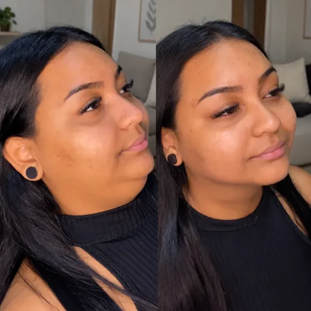
Fernanda Lopes
@fernandalopes
"Foi a única coisa que realmente funcionou para mim. Eu já tinha tentado emagrecer e fazer vários exercícios diferentes, mas a papada continuava lá."
Qual se parece mais com o seu perfil?
É uma avaliação rápida para te dar uma recomendação precisa
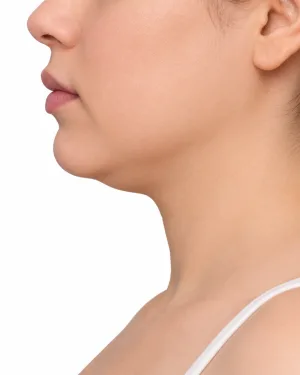
Quase não se nota
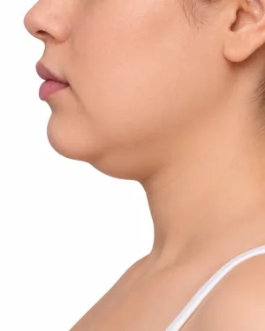
Nota-se de perfil, principalmente em fotos
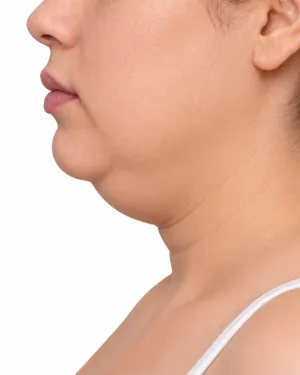
Nota-se também de frente ou em chamadas de vídeo
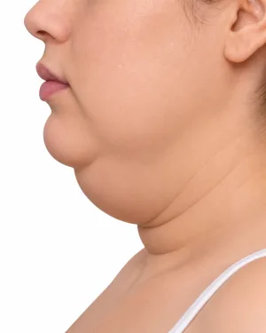
Bem marcada, já tentei várias coisas e continua aí
Mesmo quando você emagrece, a papada continua aí?
Sim, mesmo no meu peso ideal, ela continua lá
Nunca emagreci para conseguir comprovar
Sim. Acho que a minha papada é genética
Sou magro(a) e não entendo por que tenho isso
Qual é o seu objetivo?
Voltar a aparecer nas fotos sem me esconder ou disfarçar
Sentir que meu corpo e meu rosto estão em harmonia
Sentir-me bem sem depender de agulhas, cirurgias ou gastar rios de dinheiro
Recuperar minha autoestima por completo
Como você gostaria que ficasse a sua mandíbula?
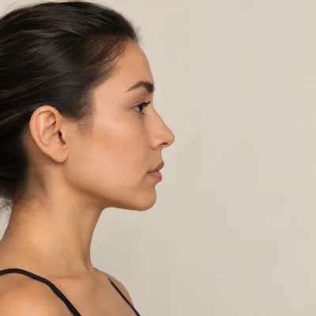
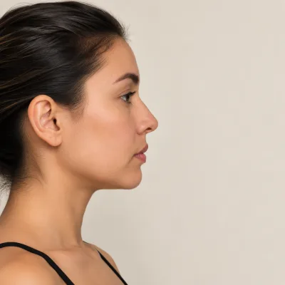
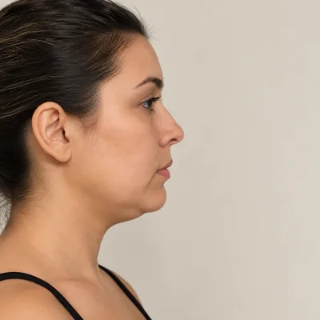
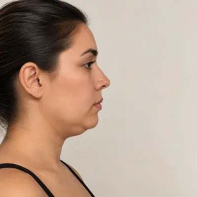
Como é a qualidade do seu sono?
Durmo bem, 7-8h, acordo descansado(a)
Durmo razoavelmente, mas às vezes acordo cansado(a)
Demoro para pegar no sono ou acordo de madrugada
Menos de 5h por noite, acordo pior do que quando fui deitar
Quais destas situações acontecem com você?
Selecione todas que se aplicam
Ronco quando durmo
Respiro pela boca
Tensiono a mandíbula sem perceber
Como muito rápido
Nenhuma das anteriores
Qual horário você tem disponível?
Antes de dormir
Tenho um tempinho livre pela manhã
Tenho uma pausa no meio do dia
Depende do dia
Como você descreveria o que vê ou sente embaixo do queixo?
É macio ao toque, parece gordurinha localizada
É pele flácida que sobra, principalmente ao mexer o pescoço
É uma mistura de gordura com flacidez
É como uma bolsinha bem marcada e delimitada
Um método desenhado para combater a papada
Para parar de gastar com procedimentos caros e ter resultados reais em 15 dias.
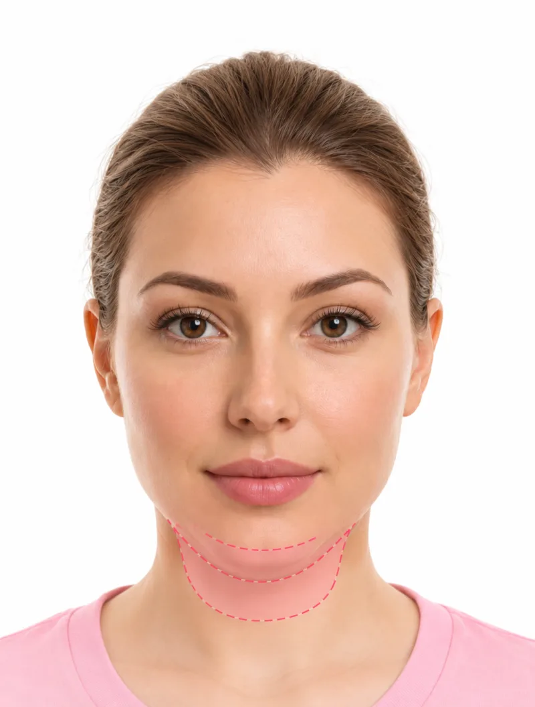
Criando seu plano personalizado...
Entendendo o seu caso e adaptando a solução ideal...
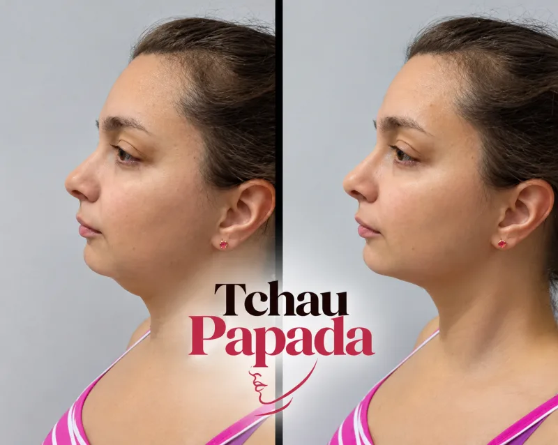
Analisando padrão muscular e estimando tempo de resposta...
Resultados da sua avaliação
Com base nas suas respostas, aqui está o que identificamos:
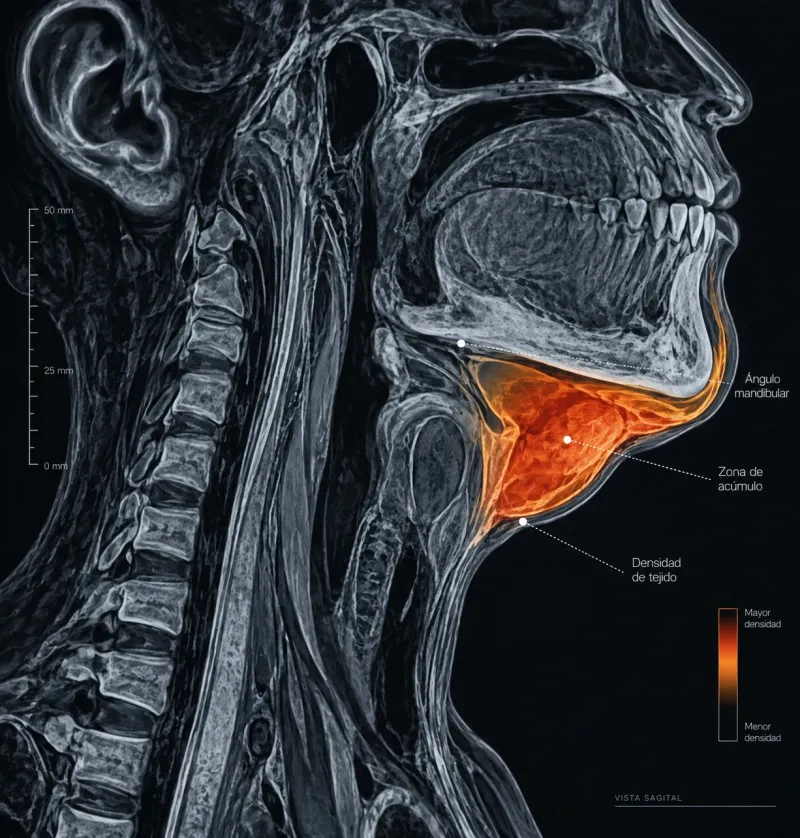
Índice Muscular vs. Gordura
Sua papada é 65% tensão muscular / acúmulo postural e 35% gordura
⚠️ Isso também pode estar influenciando nestes fatores:
A forma como você respira ou mastiga sem perceber.
Mastigar ativa os músculos do pescoço até 200 vezes por refeição. Se você come rápido ou respira pela boca, a região da papada recebe até 40% menos estímulo muscular por dia do que o ideal, facilitando o acúmulo de líquidos e flacidez.
É genética?
Pode influenciar, mas não é toda a história. O músculo platisma e a musculatura da região submentoniana ainda podem ser fortalecidos e reeducados.
⚠️ Principais sinais identificados:
❌ Inchaço ou sensação de peso embaixo do queixo
❌ A papada fica mais evidente ao abaixar a cabeça
❌ Uma bolsa bem delimitada na linha da mandíbula
✅ O protocolo ajudará a:
✅ Exercícios de tonificação postural que fortalecem esse músculo
✅ Ativação linfática diária que drena esse líquido acumulado
✅ Tonificação + estímulo ao colágeno, trabalhando a firmeza de dentro para fora
✅ Dedicar tempo específico a essa região, normalmente ignorada no skincare tradicional
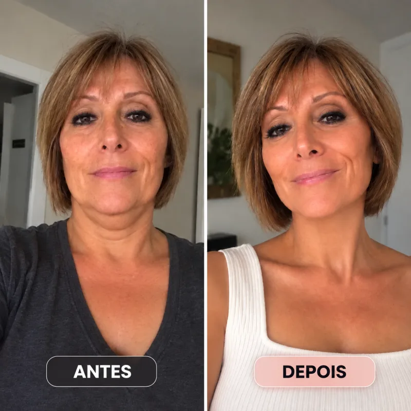
Por isso preparamos um plano pensado especificamente para o seu caso com o seu ritual próprio.
Seu Protocolo Adeus Papada de 15 dias, acesso imediato.
Verificando se ainda temos vagas disponíveis...
Aguarde alguns segundos...
Você está a apenas 15 dias de uma nova versão de você.
Deixamos uma mensagem especial antes de começar. 👇